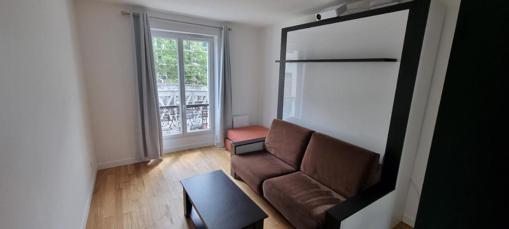
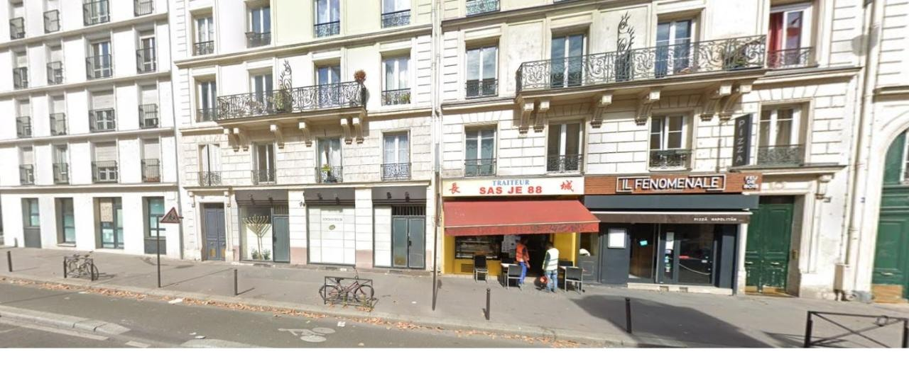
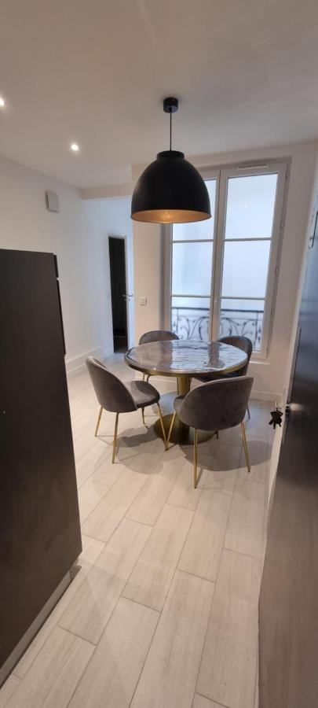
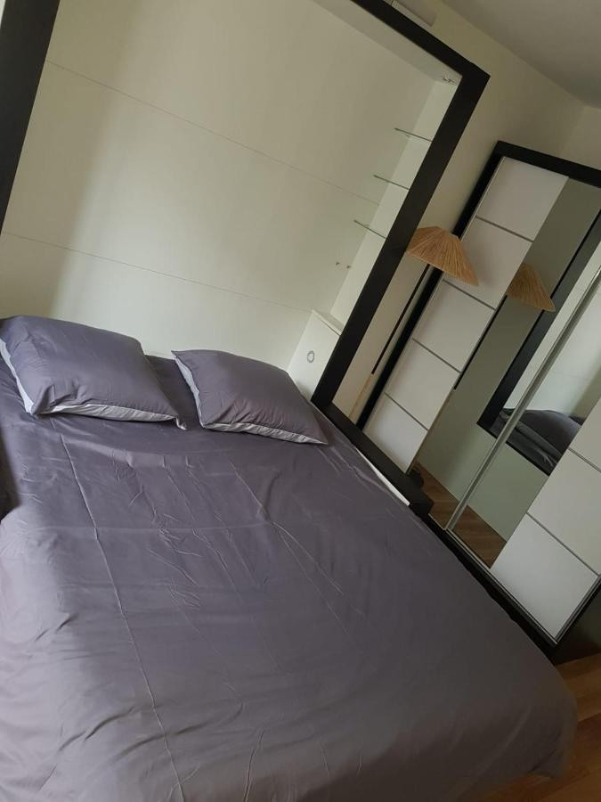
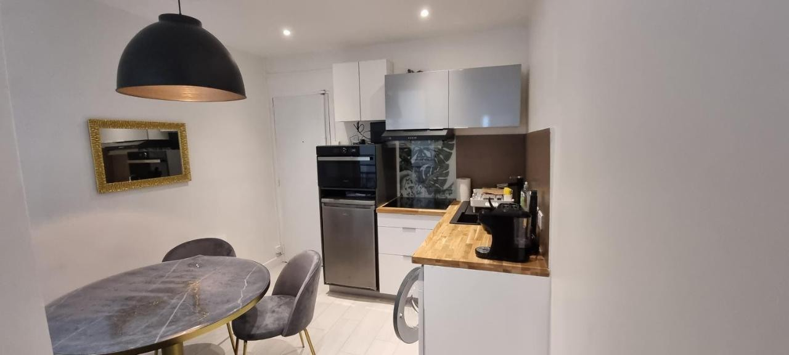
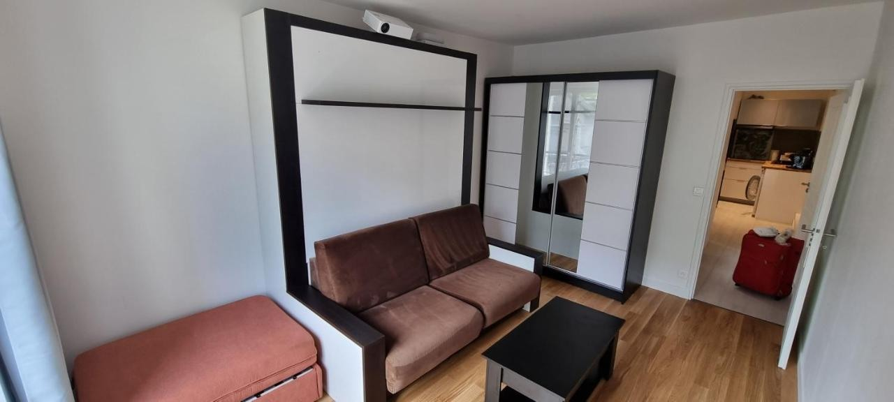
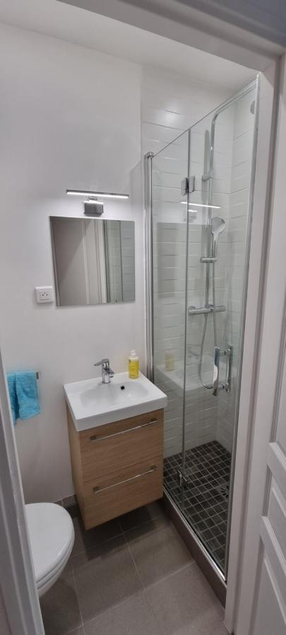
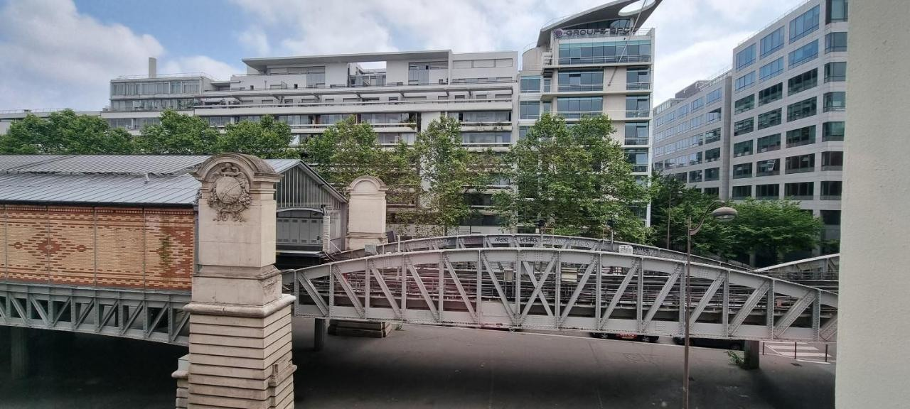

Galerie
Photos du logement
Découvrez l’appartement, ses équipements et ses différentes vues grâce aux photographies réelles de l’annonce.
Photographies réelles du logement. Cliquez sur une image pour l’agrandir.















